Wine Robot Project - Workbook
Jón Óskar Guðmundsson and Zoraiz Ahmad
This workbook shows the development of our wine robot project from the first design ideas to the final stage. The goal of the robot was to pick up a wine glass, move it to the required position, measure the wine temperature, identify whether the drink was red or white wine, and tilt the glass to give one sip. The project included CAD design, prototyping, electronics, coding, laser cutting, and 3D printing.
March 15 - Requirements of robot and initial planning
We began by reviewing the project requirements and listing what the robot had to do. The robot needed to pick up a wine glass, move it up by 0.35 m and forward or sideways by 0.2 m, tilt the glass to serve one sip, and return it to the starting position. The robot also had to stay within the required size limits and display temperature, wine type, and a live camera feed on a website.
We started by checking out the equipment available in VR3. This helped us identify the main components that could be used, including two stepper motors, stepper drivers, a servo motor, a waterproof temperature sensor, and a camera module.
March 16 - Early design ideas
On this day we focused on possible robot mechanisms. We looked into using a four-bar linkage so that the glass holder would remain upright while the arm moved. This would allow the robot to lift and move the wine glass without needing a separate motor just to keep the glass level. It was definitely something we wanted to use.
We also checked on some other designs that would help reduce torque so that the motors could move more smoothly. There are plenty of methods to do that, having counterweight on the arm, using springs or gas struts, although its unlikely we can get good springs or gas struts.
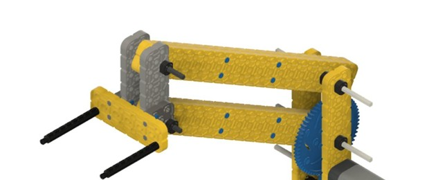
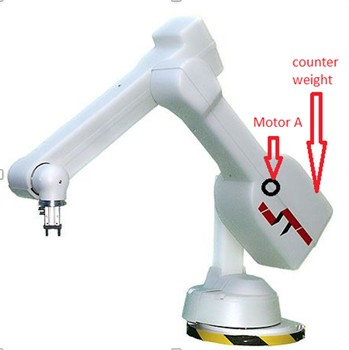
March 17 - Beginning the robot design
We started turning the concept into an actual robot design. One idea was to use a belt system from an old printer so that the motor for the second arm could be positioned closer to the base. That would reduce the weight carried by the arm and make the system more stable.
We also thought about the risk of the robot tipping over. Because of this, we considered different placements for the large stepper motor and how a gearbox might help if the base motor had to be moved farther away.
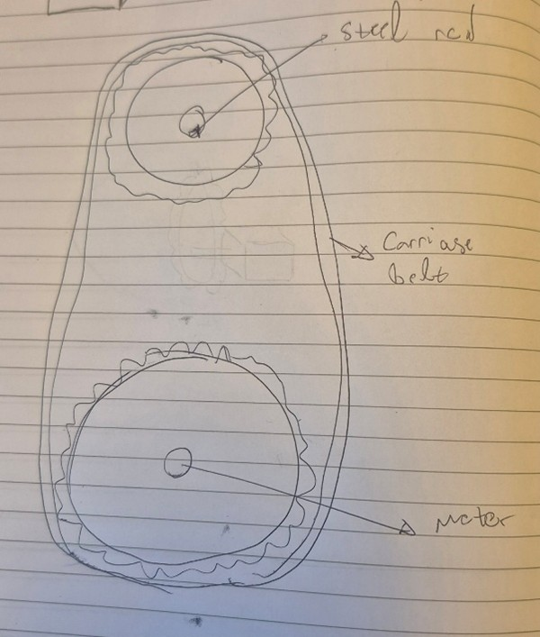
March 18 - Modelling the first parts
We began designing the main parts in Fusion 360. The first components modelled were the robot base, the gearbox area, and the parameters needed for the large stepper motor and the first arm. This gave us a much clearer idea of how the arm would be assembled physically.
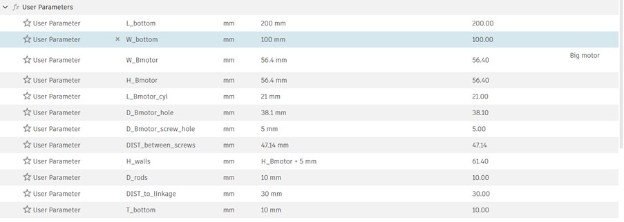
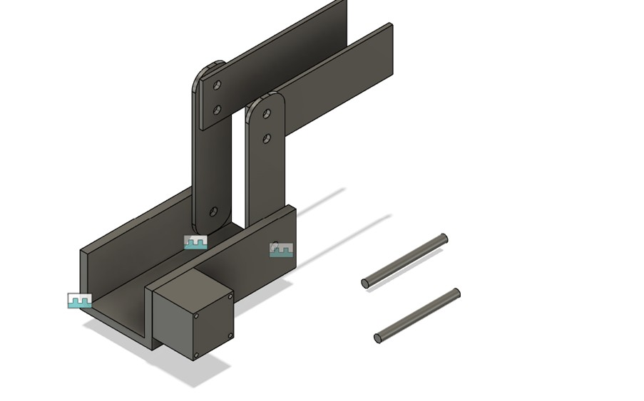
March 19 - Improving the four-bar linkage
We are now making the design so the first arm uses a proper four-bar linkage. We used a simple linkage program to understand the motion better and confirm that the end section would stay aligned as the arm moved. That alignment was essential because the wine glass needed to stay upright before the final tilt action.
Line 3 in Figure 6 remains aligned throughout the motion, which means the wine glass stays upright.
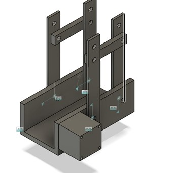
This turned out wrong, the linkages are not in the correct place, and we should probably only use two plates for each arm, since we will probably be using acrylic plates for this and that is better to have thick and big rather than small and thin.
March 20 - Reviewing remaining tasks and refining the design
We made a structured list of everything still left to do to help organize the project: finishing the design, calculating torque and center of mass, buying parts, wiring the electronics, coding the motors and sensors, and testing tolerances and holes.
At the same time, we continued improving the four-bar linkage layout so it is actually a four bar linkage that we want, here is it how it currently looks
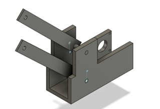
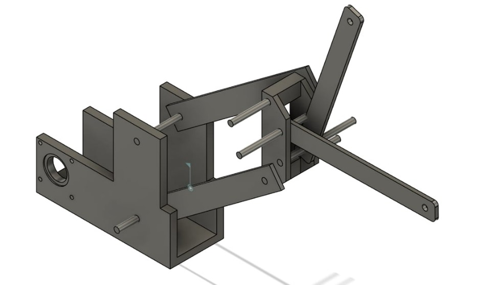
March 21 - Simplifying the arm connection
We examined the connection between the first and second arms and found that one version looked too bulky and would make it difficult to use a timing belt on the second arm. Because of that, We simplified the connection design.
By the end of the day, the robot looked much cleaner and more practical. The new version made it possible to continue with a belt-driven second joint, which was one of the main design goals.
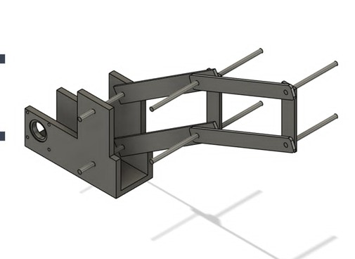
March 22 - Parts list and design priorities
With the main arm layout becoming clearer, We made a more detailed list of the remaining priorities. The main tasks were reducing motor load through gearing or pulleys, designing the cup holder and tilt mechanism, calculating torque, buying missing parts, planning the wiring, and carrying out fit tests.
We also listed which components had already been bought(or available at VR3), including the two stepper motors and 8 mm rods, and what still needed to be purchased, such as washers, bearings, a servo motor, printing material, and timing belts. This day we went from making concept to focusing on building the robot.
Glass holder
We also designed the first design of the glass holder in Fusion. It would hold both the wine glass and the heat sensor would be inserted through a hole on the bottom of the part
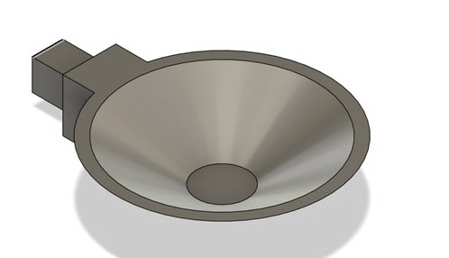
March 23 - Torque calculations
This day we worked on torque calculations. We built an Excel sheet to estimate the maximum torque in the worst-case arm position, when the robot would be fully extended to its maximum required position. This was a key part of deciding whether the selected motors and gear ratios would be sufficient.
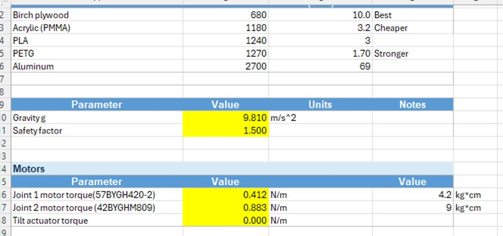
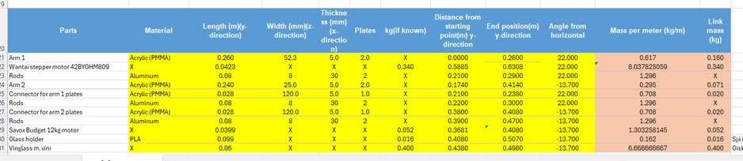
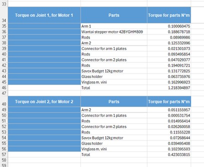
We used 1.5 safety factor and got torque on motor 1 was 1.83 Nm and torque on motor 2 was 0.63 Nm. Based on these calculations, we went with a 3:1 ratio on the first motor, that gives 2.65 Nm, and on the second one we use 2:1 and therefore got 0.824 Nm.
March 24 - Preparing for laser-cutting
We tested hole sizes for the rods and mounting screws so that the laser-cut parts would fit correctly. Based on these tests, We chose different hole sizes depending on whether a rod needed to rotate freely or stay fixed.
We also started 3D printing the glass holder, finished laser cutting most of the parts and calculated the center distance required for the timing belt system. This was one of the most productive days since we managed to get most of the physical parts we needed.
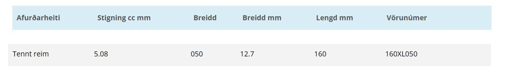
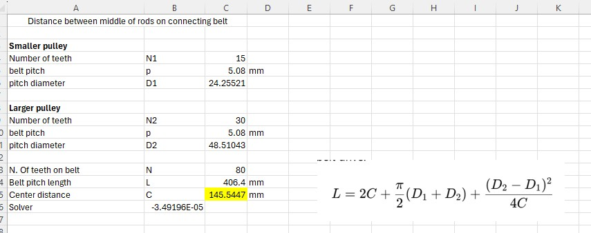
March 25 - Pulleys and motor testing
On this day we designed and printed the pulleys for the timing belt, the information was quite hard to find for this type of belt but eventually we found it.
We then started wiring the motors on a breadboard and testing them. It took some time to get the electronics working, but by the end the motors were able to run, which can be seen in this video below.
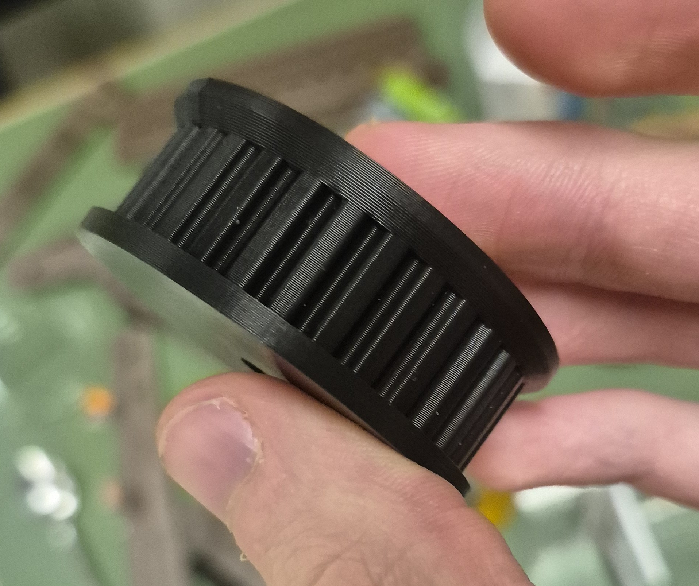
Assembling the Wine robot
Unfortunately when we started assembling the wine robot we realized that pressfit is not enough to keep the plate of the arms stuck to the rods, it will happen that the rods moves by itself, or the plate moves by itself
March 26 - New approach after assembly issues
After being given extra time we had to figure out how to make the plates and gears stuck to the rods. We decided to file one flat face on the rods and redesign the laser-cut arm plates so their holes would also have a flat side. This would create a better lock between the rods and the structure.
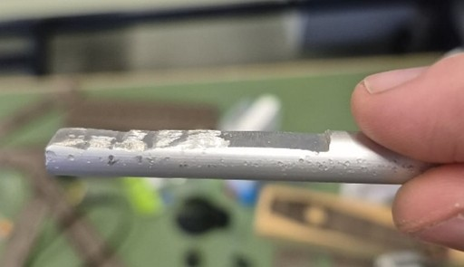
March 27 - Fixing the pulley geometry
The first prints of the pulleys did not come out correctly, there was something wrong. Turns out its a little visually misleading image we were using, where the shorter gap is actually the bigger gap and the bigger gap is actually smaller
Another issue was that we calculated the inner diameter of the pulleys incorrectly, but that was easily fixed by simply using the outer diameter(which was given on the internet) instead to make the pulleys.
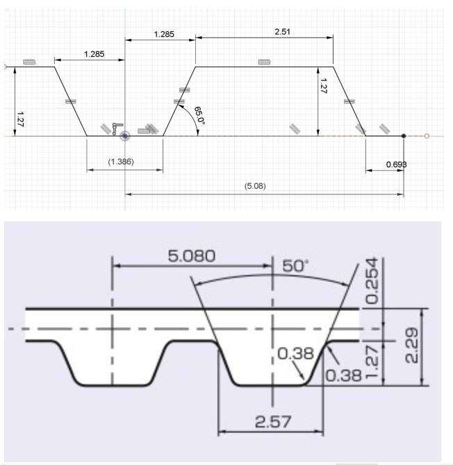
After this we started to print the some of the same parts again, but this time to be fitted with the filed rods.
March 28 - Rebuilding the base and designing the end connector
We designed a connector part at the end of the second arm. This part was intended to carry the color sensing solution and the servo motor for the tilt mechanism. We made a screw-fit test for the servo mounting so the 3D printed part would assemble properly.
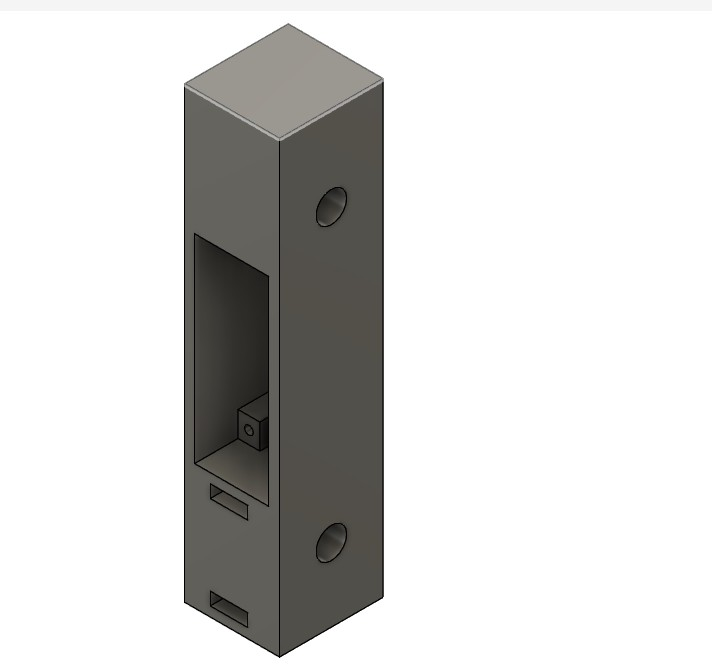
After that we started assembling the robot.
March 29 - Final assembly
We finished assembling the robot arm which can be seen here

Now we connected every electronic on to the breadboard and started testing each separately.
March 30 - Final testing and what went wrong
First up was testing the big stepper motor that moves the whole arm. It did at first not work for the whole arm currently but it moves when we have only one arm attached. Also the we seem to have filed a bit too much on the axle that holds the gear so there is small degree where nothing moves except the gears. After changing the code and adjusting the voltage on the power adapter the motor can now move the full arm. We also filed a new rod so that it fits more tightly with the gear. This is the only video we took of it, but we did manage to move it further than this.
After that checked the movement of the second joint for the second motor, the motor was not able to move the arm, it kept jumping teeth on the teeth belt. No matter what we tried we could not get it to work. Possible problems were that there was too much torque required, the belt would get slightly misaligned during the process which causes it to not work. That misalignment is due to the main joints on the first arms being misaligned, that is the holes on the base plates.
We then tried making half the length of the second arms to see if motor 2 could then do it. That worked but it made it so we could not move 40 cm away from starting point. Here is a video showing the mechanism working on one arm plate
Now we tried moving both of the motors at the same time, unfortunately that is when the axle on the first motor started moving independently of the gear connected to it. That made it so the motor did not move the arm. We tried attaching aluminum foil around the motor axle to make the gear move with it but it did not work. The issue could be that the gear is simply too small, the gear ratio needed to be 3:1 but we made the gear so small that the force on the motor would rather resist movement on the gear rather than move the robot arm.
Final reflection
Even though the final robot did not fully work, the project still taught us much about the process of creating something under much time pressure. We should have made some plan from the beginning where we estimate how much time every task takes (design, tests, coding etc) and where we should be in the process for each week. Doing smaller tests to begin with would've saved us a lot of time, for example for the pressfitted arms to the rods that did not work even though Fusion showed that it worked, or the misalignment of the rods of the base. If we were to do it again we would focus more on planning, making many small tests to save time, have some mechanism that reduced the load on the motors, like counterweighting.